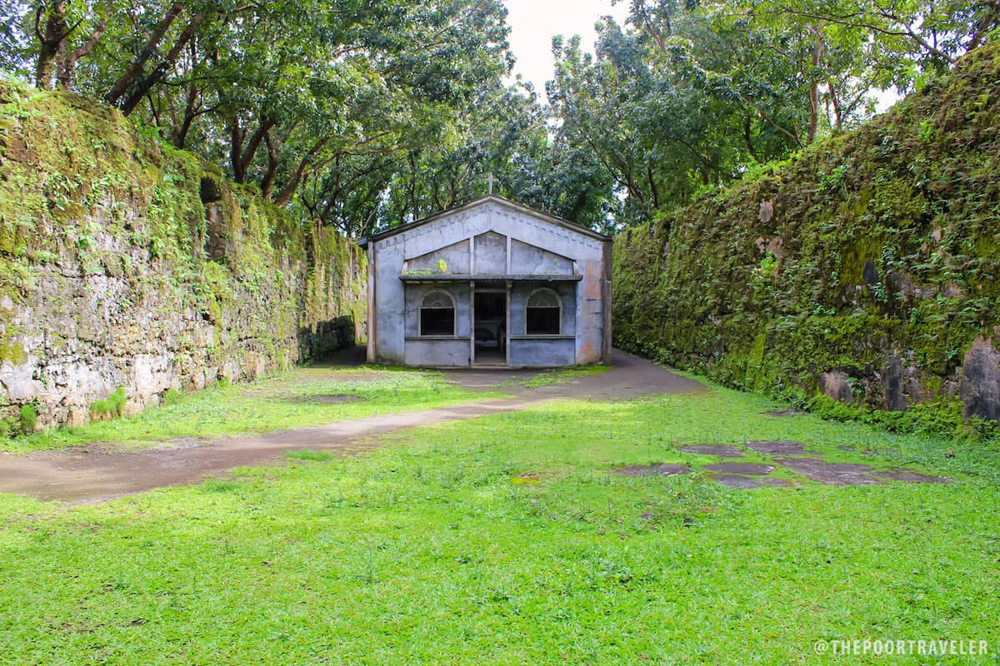

About Guiob Church Ruins
The Guiob Church Ruins, also known as the Old Catarman Church Ruins, are one of Camiguin’s most important historical landmarks.
Built during the Spanish colonial period, the church was destroyed by the eruption of Mount Vulcan in the 1870s.
Today, the remaining coral stone walls stand as a reminder of the island’s volcanic history and cultural heritage.
Quick Facts
- 📍 Catarman, Camiguin
- ⛪ Church Ruins
- 📜 Spanish Colonial Era
- 🌋 Destroyed in 1870s eruption
- 🕒 Best visit: Morning / Afternoon
- 📸 Coral stone ruins
Location Map
Visitor Comments
Leave a Comment
Maria Santos
John Cruz
Ana Lim
A very peaceful historical place.
John Cruz
Interesting ruins and great for photos!
Ana Lim
Must visit if you love history and culture.